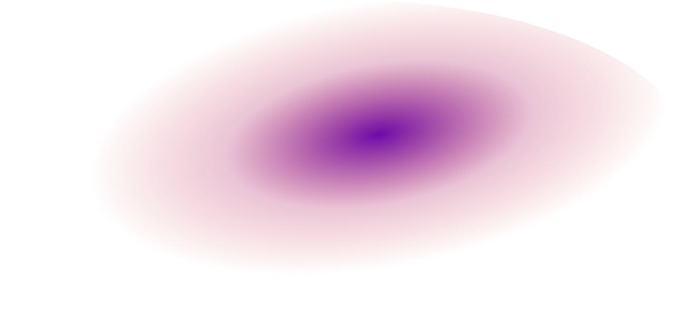

The Great Divide

Former President Rodrigo Duterte proposed the idea of an independent Mindanao in response to President Ferdinand Marcos Jr.'s push for constitutional amendments. Highlighting Mindanao's dissatisfaction with the current state of the Philippines, he expressed a desire for independence due to a perceived lack of progress. Former House Speaker Alvarez drew parallels between Mindanao's potential independence and Singapore's separation from Malaysia, emphasizing Mindanao's abundant natural resources and potential for development [1]. As such, the team is interested in the economic structure of a separate Mindanao in terms of its production and use of resources in the form of Input-Output Tables [2].
Using the national input-output table, location quotient technique, and regional GDP, we try to estimate the regional input-output table of Mindanao.
The dependence of the industries [in Mindanao] on the agricultural industry will not increase if Mindanao chooses to separate from the Philippines.
The dependence of the industries [in Mindanao] on the agricultural industry will increase if Mindanao chooses to separate from the Philippines
As we are looking into the potential economic model of Mindanao, it is essential to know how the economic model it is a part of looks like. As such, the Philippines and its Southeast Asian neighbors are important models to look into to potentially map how the economic model of Mindanao would look like.
Through our knowledge of data science, we aim to utilize SEA economic data to be able to analyze the interdependence of different industries in the Philippines and whether it correlates to the country’s GDP growth rate.
The SEA countries do not have a strong dependence on the agriculture industry in their industry ecosystem.
The SEA countries have a strong dependence on the agriculture industry in their industry ecosystem.
Data collection was done through searching online repositories for publicly available data.
UPD DCS student [other info]
UPD DCS student [other info]
UPD DCS student [other info]